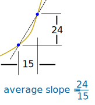
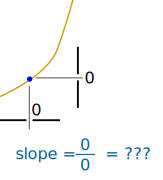
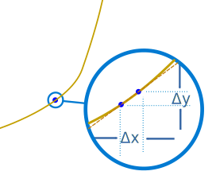
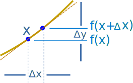

Introduction to Derivatives
It is all about slope!
|
Slope = Change in YChange in X |
 |
|
We can find an average slope between two points.
|
 | |
|
But how do we find the slope at a point? There is nothing to measure! |
 | |
|
But with derivatives we use a small difference ... ... then have it shrink towards zero. |
 |
Let us Find a Derivative!
To find the derivative of a function y = f(x) we use the slope formula:
Slope = Change in Y Change in X = ΔyΔx

And (from the diagram) we see that:
| x changes from | x | to | x+Δx | |
| y changes from | f(x) | to | f(x+Δx) |
Now follow these steps:
- Fill in this slope formula: ΔyΔx = f(x+Δx) − f(x)Δx
- Simplify it as best we can
- Then make Δx shrink towards zero.
Like this:
Example: the function f(x) = x2
We know f(x) = x2, and we can calculate f(x+Δx) :
| Start with: | f(x+Δx) = (x+Δx)2 | |
| Expand (x + Δx)2: | f(x+Δx) = x2 + 2x Δx + (Δx)2 |
Result: the derivative of x2 is 2x
In other words, the slope at x is 2x
We write dx instead of "Δx heads towards 0".
And "the derivative of" is commonly written ddx like this:
ddxx2 = 2x
"The derivative of x2 equals 2x"
or simply "d dx of x2 equals 2x"
So what does ddxx2 = 2x mean?

It means that, for the function x2, the slope or "rate of change" at any point is 2x.
So when x=2 the slope is 2x = 4, as shown here:
Or when x=5 the slope is 2x = 10, and so on.
Note: f’(x) can also be used for "the derivative of":
f’(x) = 2x
"The derivative of f(x) equals 2x"
or simply "f-dash of x equals 2x"
Let's try another example.
Example: What is ddxx3 ?
We know f(x) = x3, and can calculate f(x+Δx) :
| Start with: | f(x+Δx) = (x+Δx)3 | |
| Expand (x + Δx)3: | f(x+Δx) = x3 + 3x2 Δx + 3x (Δx)2 + (Δx)3 |
Result: the derivative of x3 is 3x2
Have a play with it using the Derivative Plotter.
Derivatives of Other Functions
We can use the same method to work out derivatives of other functions (like sine, cosine, logarithms, etc).
But in practice the usual way to find derivatives is to use:
But using the rules can be tricky!
Example: what is the derivative of cos(x)sin(x) ?
We get a wrong answer if we try to multiply the derivative of cos(x) by the derivative of sin(x) ... !
Instead we use the "Product Rule" as explained on the Derivative Rules page.
And it actually works out to be cos2(x) − sin2(x)
So that is your next step: learn how to use the rules.
Notation
"Shrink towards zero" is actually written as a limit like this:
"The derivative of f equals
the limit as Δx goes to zero of f(x+Δx) - f(x) over Δx"
Or sometimes the derivative is written like this (explained on Derivatives as dy/dx):
The process of finding a derivative is called "differentiation".
You do differentiation ... to get a derivative.
Where to Next?
Go and learn how to find derivatives using Derivative Rules, and get plenty of practice: